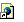

<!DOCTYPE HTML PUBLIC "-//W3C//DTD HTML 4.0 Transitional//EN">
<HTML>
<HEAD>
<META HTTP-EQUIV="Content-Type" CONTENT="text/html; charset=ISO-8859-1">
<META NAME="Generator" CONTENT="NetObjects Fusion 5.0 for Windows">
<TITLE>Folder Trees</TITLE>
<!--
You are free to copy the "Folder-Tree" script as long as you keep this copyright notice:
   * 
   * Code available at: http://javascript.internet.com/foldertree/foldertree.zip
   *
   * Author: Marcelino Alves Martins (martins@hks.com)
   *
Version control:  Creation: January '97.
                         Last changes: June '97
Instructions:
  - You only have to touch in function generateTree()
  - Nodes with other folders inside are created with folderNode(<folder name>)
  - Nodes with documents inside are created with leafNode(<folder name>)
  - Documents are nodes created with generateDocEntry(<new window?>, <doc name>, <doc link>)
  - You cannot have 'mixed' folders (folders with other folders _and_ with documents)
For other information refer to http://www.geocities.com/Paris/LeftBank/2178/foldertree.html
-->
<HTML>
<HEAD>
<title>JavaScript Source Code 3000</title>
<META HTTP-EQUIV="JavaScript Source Code 3000" CONTENT="no-cache">
<META NAME="description" CONTENT="The newest way to help visitors find their way around your site!  Bet you haven't seen it before!">

<script LANGUAGE="JavaScript">
<!--  to hide script contents from old browsers

//each node in the tree is an Array with 4+n positions 
//  node[0] is 0/1 when the node is closed/open
//  node[1] is 0/1 when the folder is closed/open
//  node[2] is 1 if the children of the node are documents 
//  node[3] is the name of the folder
//  node[4]...node[4+n] are the n children nodes

// ***************
// Building the data in the tree
function generateTree()
{
var aux1, aux2, aux3, aux4
        foldersTree = folderNode("JavaScript Start folder")
    aux1 = appendChild(foldersTree, folderNode("JavaScripts!!"))
        
aux2 = appendChild(aux1, leafNode("Background Effects"))
appendChild(aux2, generateDocEntry(0, "Background Effects Index", "../bgeffects/index.htm", ""))
aux2 = appendChild(aux1, leafNode("Buttons"))
appendChild(aux2, generateDocEntry(0, "Buttons Index", "../buttons/index.htm", ""))
aux2 = appendChild(aux1, leafNode("Calculators"))
appendChild(aux2, generateDocEntry(0, "Calculators Index", "../calculators/index.htm", ""))
aux2 = appendChild(aux1, leafNode("Calendars"))
appendChild(aux2, generateDocEntry(0, "Calendars Index", "../calendars/index.htm", ""))
aux2 = appendChild(aux1, leafNode("Clocks"))
appendChild(aux2, generateDocEntry(0, "Clocks Index", "../clocks/index.htm", ""))
aux2 = appendChild(aux1, leafNode("Cookies"))
appendChild(aux2, generateDocEntry(0, "Cookies Index", "../cookies/index.htm", ""))
aux2 = appendChild(aux1, leafNode("Equivalents"))
appendChild(aux2, generateDocEntry(0, "Equivalents Index", "../equivalents/index.htm", ""))
aux2 = appendChild(aux1, leafNode("Forms"))
appendChild(aux2, generateDocEntry(0, "Forms Index", "../forms/index.htm", ""))
aux2 = appendChild(aux1, leafNode("Games"))
appendChild(aux2, generateDocEntry(0, "Games Index", "../games/index.htm", ""))
aux2 = appendChild(aux1, leafNode("Messages"))
appendChild(aux2, generateDocEntry(0, "Messages Index", "../messages/index.htm", ""))
aux2 = appendChild(aux1, leafNode("Miscellaneous"))
appendChild(aux2, generateDocEntry(0, "Miscellaneous Index", "../miscellaneous/index.htm", ""))
aux2 = appendChild(aux1, leafNode("Page Details"))
appendChild(aux2, generateDocEntry(0, "Page Details Index", "../page-details/index.htm", ""))

aux2 = appendChild(aux1, leafNode("Password Protection"))
appendChild(aux2, generateDocEntry(0, "Password Protection Index", "../passwords/index.htm", ""))
aux2 = appendChild(aux1, leafNode("Scrolls"))
appendChild(aux2, generateDocEntry(0, "Scrolls Index", "../scrolls/index.htm", ""))
aux2 = appendChild(aux1, leafNode("User Details"))
appendChild(aux2, generateDocEntry(0, "User Details Index", "../user-details/index.htm", ""))
aux1 = appendChild(foldersTree, folderNode("The Other Stuff!!"))
aux2 = appendChild(aux1, leafNode("Search Engines"))
appendChild(aux2, generateDocEntry(0, "Yahoo", "http://www.yahoo.com", ""))
}

// Auxiliary function to build the node
function folderNode(name)
{
var arrayAux
        arrayAux = new Array
        arrayAux[0] = 0
        arrayAux[1] = 0
        arrayAux[2] = 0
        arrayAux[3] = name
        
        return arrayAux
}
function leafNode(name)
{
var arrayAux
        arrayAux = new Array
        arrayAux[0] = 0
        arrayAux[1] = 0
        arrayAux[2] = 1
        arrayAux[3] = name
        
        return arrayAux
}
//this way the generate tree function becomes simpler and less error prone
function appendChild(parent, child)
{
        parent[parent.length] = child
        return child
}
//these are the last entries in the hierarchy, the local and remote links to html documents
function generateDocEntry(icon, docDescription, link)
{
var retString =""
        if (icon==0)
                retString = "<A href='"+link+"' target=folderFrame></a><td nowrap><font size=-1 face='Arial, Helvetica'>" + docDescription + "</font>"
        return retString
}

// **********************
// display functions
//redraws the left frame
function redrawTree()
{
var doc = top.treeFrame.window.document
        doc.clear()
        doc.write("<body bgcolor='white'>")     
        redrawNode(foldersTree, doc, 0, 1, "")
        doc.close()
}
//recursive function over the tree structure called by redrawTree
function redrawNode(foldersNode, doc, level, lastNode, leftSide)
{
var j=0
var i=0
        doc.write("<table border=0 cellspacing=0 cellpadding=0>")
        doc.write("<tr><td valign = middle nowrap>")
        doc.write(leftSide)
        if (level>0)
                if (lastNode) //the last 'brother' in the children array
                {
                        doc.write("")
                        leftSide = leftSide + "" 
                }
                else
                {
                        doc.write("")
                   leftSide = leftSide + ""
                }
        displayIconAndLabel(foldersNode, doc)
        doc.write("</table>")
        if (foldersNode.length > 4 && foldersNode[0]) //there are sub-nodes and the folder is open
        {
                if (!foldersNode[2]) //for folders with folders
                {
                        level=level+1
                        for (i=4; i<foldersNode.length;i++)
                                if (i==foldersNode.length-1)
                                        redrawNode(foldersNode[i], doc, level, 1, leftSide)
                                else
                                        redrawNode(foldersNode[i], doc, level, 0, leftSide)
                }
                else //for folders with documents
                {
                        for (i=4; i<foldersNode.length;i++)
                        {
                                doc.write("<table border=0 cellspacing=0 cellpadding=0 valign=center>")
                                doc.write("<tr><td nowrap>")
                                doc.write(leftSide)
                                if (i==foldersNode.length - 1)
                                 doc.write("")
                                else
                                        doc.write("")
                                doc.write(foldersNode[i])
                                doc.write("</table>")
                        }
                }
        }
}
//builds the html code to display a folder and its label
function displayIconAndLabel(foldersNode, doc)
{
        doc.write("<A href='javascript:top.openBranch(\"" + foldersNode[3] + "\")'")
        if (foldersNode[1])
        {
                doc.write("onMouseOver='window.status=\"Close folder\"; return true'></a>")
        }
        else
        {
                doc.write("onMouseOver='window.status=\"Open folder\"; return true'></a>")
        }
        doc.write("<td valign=middle align=left nowrap>")
        doc.write("<font size=-1 face='Arial, Helvetica'>"+foldersNode[3]+"</font>")
}
//**********************+
// Recursive functions
//when a parent is closed all children also are
function closeFolders(foldersNode)
{
var i=0
        if (!foldersNode[2])
        {
                for (i=4; i< foldersNode.length; i++)
                        closeFolders(foldersNode[i])
        }
        foldersNode[0] = 0
        foldersNode[1] = 0
}
//recursive over the tree structure
//called by openbranch
function clickOnFolderRec(foldersNode, folderName)
{
var i=0
        if (foldersNode[3] == folderName)
        {
                if (foldersNode[0])
                        closeFolders(foldersNode)
                else
                {
                        foldersNode[0] = 1
                        foldersNode[1] = 1
                }
        }
        else
        {
                if (!foldersNode[2])
                        for (i=4; i< foldersNode.length; i++)
                                clickOnFolderRec(foldersNode[i], folderName)
        }
}

// ********************
// Event handlers
//called when the user clicks on a folder
function openBranch(branchName)
{
        clickOnFolderRec(foldersTree, branchName)
        if (branchName=="JavaScript Start folder" && foldersTree[0]==0)
                top.folderFrame.location="http://javascript.internet.com/foldertree/window.html"
        timeOutId = setTimeout("redrawTree()",100)
}
//called after this html file is loaded
function initializeTree()
{
        generateTree()
        redrawTree()
}
var foldersTree = 0
var timeOutId = 0
generateTree() //sometimes when the user reloads the document Netscape 3.01 does not trigger the onLoad event (!!)

// end hiding contents from old browsers  -->
</script>

</HEAD>
<FRAMESET cols="235,*"  onLoad='initializeTree()'> 
        <FRAME src="window.html" /foldertree/window.html" name="treeFrame"> 
        <FRAME SRC="info.html" /foldertree/info.html" name="folderFrame">
</FRAMESET> 

</HTML>

<BASE TARGET="_parent">
<LINK REL=STYLESHEET TYPE="text/css" HREF="../Folder_Trees/style.css">
<LINK REL=STYLESHEET TYPE="text/css" HREF="../Folder_Trees/site.css">
<STYLE>
</STYLE>
</HEAD>
<BODY TOPMARGIN=2 LEFTMARGIN=2 MARGINWIDTH=2 MARGINHEIGHT=2>
</BODY>
</HTML>
 